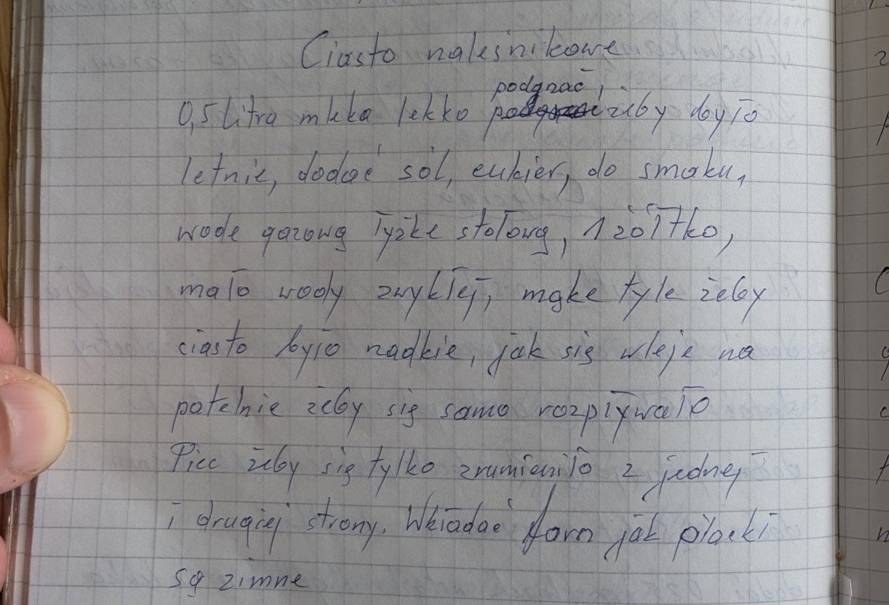
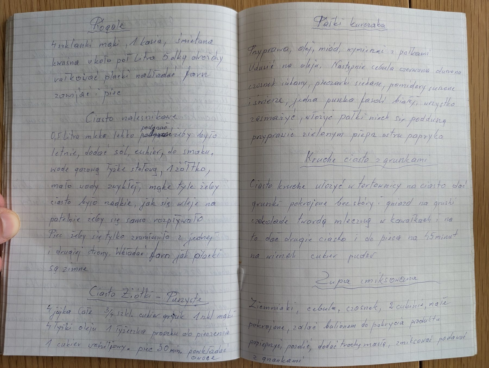

Ciasto naleśnikowe


Składniki
- 0,5 litra mleka
- sól, cukier do smaku
- 1 łyżka stołowa wody gazowanej
- 1 żółtko
- trochę zwykłej wody
- mąka (ile potrzeba)
Przygotowanie
- Mleko lekko podgrzać, żeby było letnie.
- Dodać sól i cukier do smaku, łyżkę wody gazowanej, żółtko i trochę zwykłej wody.
- Dodać tyle mąki, żeby ciasto było rzadkie i samo rozpływało się po patelni.
- Piec, aż się zrumieni z jednej i drugiej strony.
- Farsz wkładać, gdy placki są zimne.
Oryginalny zapis
Ciasto naleśnikowe
podgrzać
0,5 litra mleka lekko [poprawione] żeby było
letnie, dodać sól, cukier, do smaku,
wodę gazową łyżkę stołową, 1 żółtko,
mało wody zwykłej, mąkę tyle żeby
ciasto było rzadkie, jak się wleje na
patelnię żeby się samo rozpływało
Piec żeby się tylko zrumieniło z jednej
i drugiej strony. Wkładać farsz jak placki
są zimne